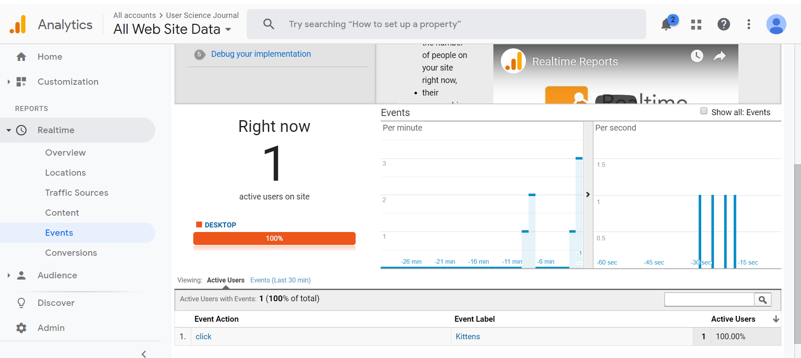

To set up an event or a goal (which I don't think is very intuitive), one must go into the admin panel and click on the "Goals" item in the "Create View" list on the far right. If you have any events or goals set up, they will be displayed here. Google allows you to set up 20 goals and shows you how many you have remaining. Click on "New Goal" and scroll to the bottom and mark the box labeled "Custom". Click continue and you will get a new screen that allows you to design a new goal based on a destination, time kept on the site or how many pages a user navigates. You can also pick an event to track. I picked an my kitten event and put in a description, a category, a label and a value. All of these attributes were also added to a gtag placed on the kitten button. Below is screen shot of the kitten event after it was active.
I have clicked on the kitten button myself, and have requested others do so but data is slow to build. Goals are different than events, and usually are marketing goals, such as an increase in a user purchasing something on the website. For some goals, the marketing team is watching the progression of a user through a series of pages as they decide what to buy, place it in their shopping cart, and then head for checkout. If (and I have done this) a user puts items in a shopping cart and then leaves the site without following through on the purchase, this could be a sign of frustration with the site, or not remotely related. I regularly add books to my Amazon cart so I won't forget I want them, and then when I have a few books I finish the order. I feel I am doing my part to mess with Amazon's analytics team.
Google Analytics has a funnel report that shows how users are progressing through a goal, and I find it beautiful because I am a design nerd. I don't have the data to produce a funnel report but I took a screen shot of a funnel report from the Google Analytics sample database, shown below.
This report confirms my expectations that not all people who add items to a shopping cart go through with it, the percentage here is only 57.26%. I don't know why displaying data as a visual is so compelling to humans, but it is, and Google has created a powerful tool to watch our websites and give us beautiful feedback. For my next post, I will talk more about data and A/B testing. Stay tuned.
Resources:
Krug, Steve. Don't Make Me Think, Revisited : a Common Sense Approach to Web Usability. [Berkeley, Calif.] :New Riders, 2014.
Google Analytics Link here
Google. Tools for Developers. Lighthouse. Web. 2019. Lighthouse link.
webaim.org. WAVE. Web. 2019. WAVE link